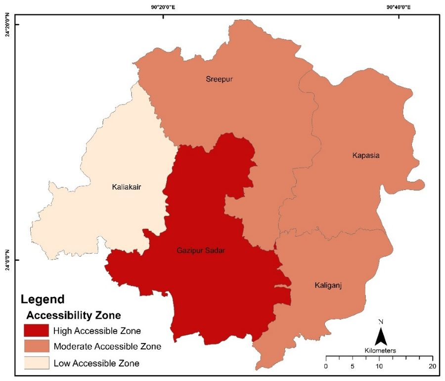

| Upazila | Shimbel index | Access | Resorts |
|---|---|---|---|
| Gazipur Sadar | 5 | High | 13 |
| Sreepur | 6 | Moderate | 7 |
| Kapasia | 7 | Moderate | 3 |
| Kaliganj | 6 | Moderate | 2 |
| Kaliakair | 8 | Low | 1 |
A lower Shimbel index means fewer steps to reach the rest of the network. Accessibility and resort numbers were related with an R² of 0.67.
Maps from Coalee, Pobon & Hafsa (2024) · View on ResearchGate